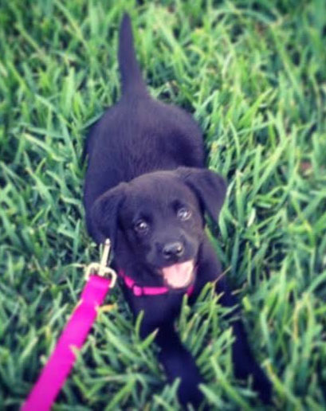

About
Professional Me:
If I was down to my last dollar, I'd spend it on public relations. — Bill Gates
I'm currently pursuing my Master of Arts degree with a specialization in public relations from the University of Florida. My undergraduate work was also in public relations. I graduated magna cum laude from the University of Florida in 2008 with a Bachelor of Science in public relations, a minor in leadership, and an outside concentration in psychology.
After graduation, I worked in public relations and marketing for almost four years. I know what to expect in a fast-paced, deadline-driven setting. The most important lesson I've learned during my career thus far is working as a team toward a common goal. The lessons I've learned outside the classroom have been equally important to me.
Fun me:
I'm from a small town in north Florida, so I definitely enjoy things some may consider "country bumpkin." Like a true Floridian, I cannot get enough sunshine. There is no better place to be than out by the water in my opinion. Saturdays in the fall are also some of my favorite things. I'm a college football junkie. Go Gators!If there is ever a funny joke you know, please tell me because I love them! I laugh at them almost every time. Same goes for gifs or memes. Just make sure the grammar is correct because I am a bit of a grammar enthusiast.
Finally, I'm lucky enough to own the world's cutest dog. Meet Nox!